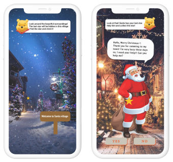

<!DOCTYPE html>
<html lang="en">

<head>
    <link href="css/project3.css" rel="stylesheet" />
    <meta charset="UTF-8" />
    <meta http-equiv="X-UA-Compatible" content="IE=edge" />
    <meta name="viewport" content="width=device-width, initial-scale=1.0" />
</head>

</html>

<body>
    <header>
        <div class="top_container">
            <nav>
                <div class="box_1">
                    <a href=./index.html>Portfolio</a>
                </div>
                <div class="box_2">Project</div>
                <div class="box_3">
                    <a href="./About_me.html">About</a>
                </div>
            </nav>
            <!--project name and cover of the page-->

            <div class="cover_element">
                <div class="text">
                    <h2 id="project_name">Adventure to Santa village</h2>
                    <h4 id="project_overview">"It is made only for a specific user who lives far away from friends and
                        family. Through digital unwrapping experience, the user finally receive a intangible gift from
                        family. This digital unwrapping process consist of user’s interest, personality and needs."</h4>
                </div>
                <div class="main_img">
                    
                </div>
            </div>
        </div>
    </header>
    <article>
        <!--process of project-->
        <div class="project_overview">
            <h2>Digital unwrapping concept</h2>
            <p>This unwrapping process is based on travel to Santa village. Target user think Christmas is the most
                important and special day in year. Therefore, through the process, user can experience a speical
                Christmas in her life. </p>
        </div>
        <div class="container">
            <!--explain about UX factors-->
            <h2>UX factors that fit the needs and personality of the user are.</h2>
            <div class="circle">
                <div class="circle_1">Stimulation</div>
                <div class="circle_2">Activation</div>
                <div class="circle_3">Relatedness</div>
            </div>
            <div class="explanation">
                <div>-Stimulation (engagement)- User is an outgoing person whose dream is to travel around the world and
                    explore new opportunities. It triggers her to keep having curiosity about everything.
                </div>
                <div>-Activation (engagement)- User loves surprises because of an anticipation of what's going to happen
                    and how interactive it is.
                </div>
                <div>-Relatedness(meaning)- User appreciates like-minded people, that’s why it’s important for her to
                    feel like she is part of the group.
                </div>
            </div>
        </div>
        <div class="steps">
            <h2>4 steps of gift giving expereince</h2>
            
        </div>
    </article>
    <main>
        <!--accroding to steps, I will add my works-->
        <div class="announcement">
            <h2 class="subject_name">Announcement</h2>
            <div>It is a beginning step. This part is important to build anticipation and guide to digital unwrapping.
                In order to include an engagment element in this part, a link address which indicates a digital
                prototype is hidden by white tape. So, a user needs to scratch with coin to see the link address. This
                activity is also part of the adventure in the digital unwrapping process. It will leads a user
                anticipante what event will happen.</div>
            <div class="token">
                
                
                
            </div>
        </div>
        <div class="unwrapping">
            <h2 class="subject_name">Digital unwrapping</h2>
            <div>It is middle step for gift giving experience. This part conveys engaging and meaningful process. I
                attached a link which is real prototype. </div>
            <a id="figma"
                href="https://www.figma.com/proto/uBQTR6h0gtdQTJfb6tJwaa/high-fi-prototype-bs-personal?page-id=180%3A2&node-id=180%3A3&viewport=241%2C48%2C0.07&scaling=scale-down&starting-point-node-id=180%3A3">www.digital_unwrapping_prototype.com
            </a>
            <div class="first">
                <div class="main_first">
                    <h3>> Main & First pages</h3>
                    <div>The combination with black & white makes user to anticipant about what it is. The main guide is
                        pooh which is one of Disney’s characters. It fits user’s interest so it makes user get involved
                        in the adventure. Also, mentioning the rules before starting the process helps the user
                        understanding what user do. It reduces confused during unwrapping process. </div>
                    
                </div>
                <div class="second">
                    
                    <h3>> Map pages</h3>
                    <div>The journey to reach final destination is to follow the star. The map page will give overview
                        information about where user stands and how many steps left. Also, every user go back to the map
                        page, the background colour will be more dark to express time goes by. </div>
                </div>
            </div>
            <div class="third">
                <div class="mission">
                    <h3>> Mission & Incorrect pages</h3>
                    <div>The missions consist of questions related to Disney movies, which the user loves. That is not
                        difficult to accomplish the mission. And it makes user do some activities in the process.
                        Therefore, it leads enjoyment and interested from a user. When the user select wrong answer, the
                        funny meme will come out to trigger user to try again. It also makes user not to loose the
                        interesting about the process. </div>
                    
                </div>
                <div class="rewards">
                    
                    <h3>> rewards</h3>
                    <div>User can collect a star when choosing right answer. And as a reward, some slides will show up
                        when pressing the star. These slides will be related to user’s backup stories that are good or
                        missing memories in user's mind. This feature will fulfil relatedness of ux factors. </div>
                </div>
            </div>
        </div>
    </main>
    <footer>
        <!--climax & reveal steps-->
        <div class="climax">
            <h2 class="subject_name">Climax</h2>
            <div>Finally, the user can know where user are going to. When user see the Santa village, user can expect
                that a Santa will give a gift to user. However, in the digital unwrapping, it requires one more step to
                reach a gift owing to remove an obvious situation. Thus, when user meets a Santa, he will ask helping to
                decorate a tree, instead of giving a gift immediately. Furthermore, decorating tree is user’s favorite
                activity on Christmas.</div>
            <div class="content">
                
                <span> &LT;Santa village</span>
                <span id="under"> Decorate Tree > </span>
                
            </div>
        </div>
        <div class="reveal">
            <h2 class="subject_name">Reveal</h2>
            <div class="content_2">
                
                <div class="text_gift">
                    <div class="receive">
                        <div class="gift"> > Receiving a gift</div>
                        <h4>When user finish all missions to collect four stars, a gift will appear in front of the
                            tree.
                            Because usually, Santa leaves a gift under the tree. Moreover, by showing up all stars on
                            top of
                            the screen, user can realise that user did everything pefectly. When user press the gift
                            box,
                            the final intangible gift will come out. </h4>
                    </div>
                    <div class="intangible">
                        <div class="gift"> > Intangible a gift</div>
                        <h4>The intagible gift is a Disney land ticket. The user is really big fan of Disney movies.
                            Because
                            every time user watches the movies, user can feel childhood innocence. Therefore, all tasks
                            and
                            guide are made by using Disney characters. This also is an indication of the intangible
                            gift.
                        </h4>
                    </div>
                </div>
            </div>
        </div>
    </footer>
    <section class="marker">
        <div class="marker__name">Ellie's</div>
        <div class="marker__state">Portfolio</div>
    </section>
</body>